Nuevas
investigaciones colocan al faraón "hereje"Akhenatón
a la altura de Hitler y Stalin
El egiptólogo Nicholas Reeves afirma que Nefertiti sucedió a su radical esposo en el trono.
Jacinto Antón. Barcelona. Pocas épocas hay tan apasionantes como el periodo amarniense del Antiguo Egipto (hacia el 1300 antes de Cristo), marcado por las figuras del faraón hereje Akhenatón, su esposa –la bella Nefertiti– y el pobre y dorado Tutankamón. En estos agitados tiempos encontramos de todo: revolución política, religiosa y artística, escamoteo de momias, conspiración, incesto, travestismo y hasta indicios de asesinato. Lógicamente, es una época que ha dado mucho que hablar. Ahora, nuevas investigaciones colocan a Akhenatón, tenido antes por un místico pacifista, a la altura criminal de Hitler y Stalin.
Pese a que sólo duró unos treinta años, los problemas y enigmas que plantea el periodo amarniense (llamado así por El-Amarna, nombre moderno del lugar donde Akhenatón se hizo construir su nueva capital, Akhetatón), dan para muchas vidas de egiptólogo, que suelen ser largas. La bibliografia sobre los reinados de Amenofis III, bajo el que empezó a gestarse la herejía atoniana –la sustitución de los dioses tradicionales egipcios por el culto único al disco solar, el Atón–; su hijo Amenofis IV, que cambió su nombre por el de Akenatón; su misterioso sucesor Esmenjkare, tenido a veces por gay; el siguiente, Tutankamón, y el que sucedió a éste, el viejo Ay, con el que se volvió más o menos a la ortodoxia, es copiosísima y con interpretaciones radicalmente distintas de los acontecimientos. Toda teoría, además, puede irse por tierra ante la aparición de nuevas evidencias arqueológicas.
Así las cosas, hay que saludar el valor de un egiptólogo de tanto prestigio como el británico Nicholas Reeves (autor, entre otros excelentes libros, de Todo Tutankamón) al poner por escrito en su nueva obra divulgativa, Akhenaten, Egypt's false prophet (Thames & Hudson, 2001), que parece llamada a convertirse en un clásico como el Akhenaton, de Cyril Aldred, todas sus apreciaciones sobre el asunto, basadas en años de investigación. Reeves ha estado incluso excavando en los últimos tiempos en el Valle de los Reyes en busca de una tumba desconocida de época amarniana, de momento infructuosamente.
"Falso profeta"
Las aseveraciones que hace Reeves no son todas nuevas –sobre Akhenatón y su época se ha hablado ya mucho–, pero sí lo es la contundencia con que las pone blanco sobre negro y gran parte de las pruebas que ofrece.
Entre lo más sorprendente figura la radicalidad en la condena del faraón hereje. Para Reeves, Akhenatón fue un "falso profeta", un tipo manipulador que actuó en su propio provecho, para mantener y aumentar su despótico poder, y que empleó para ello medios absolutamente tiránicos, como el puro terror. Nada pues del idealista, el metafísico, el soñador Akhenatón que ha querido una parte de la tradición egiptológica. Incluso las sorprendentes y delicadas imágenes del nuevo arte amarniano que muestran, rompiendo el rígido canon egipcio, al faraón en escenas de intimidad familiar, relajado e informal, besando a su mujer o acariciando a sus hijas, no serían sino propaganda política para hacer aparecer más humano al nuevo régimen y al dictador Akhenatón. Reeves compara esas estampas a las de Hitler acariciando a su perro, Stalin rellenando su pipa o el Mao beatífico de las postales.
Del extraño aspecto físico del faraón en sus representaciones –esculturas, pinturas y relieves–-, Reeves considera que fundamentalmente es una convención artística para recalcar su diferencia, su esencia divina.
Admite, no obstante, la posibilidad de que Akhenatón sufriera un desorden genético raro, el síndrome de Marfan, una enfermedad que no implica desórdenes mentales ni impotencia (a diferencia del síndrome de Froehlich, propuesto por autores anteriores, como Aldred) pero que tiene como síntomas, entre otros rasgos que presenta el faraón en muchas representaciones, cara larga, dedos en forma de patas de araña, curvatura anormal del cuello y columna, elongación craneal, hipogenitalismo y acumulación irregular de grasa subcutánea. Además, la enfermedad provoca una falta de visión cercana a la ceguera, lo que explicaría la extraordinaria intimidad física que muestra la familia real, la habilidad musical del rey, su habitual uso de bastón y, last but not least, su adhesión a Atón, el disco solar, "quizá la única divinidad cuyo símbolo podía ver".
Incesto
Enfermo o no, subraya Reeves, Akhenatón no fue un monje. No sólo tuvo al menos seis hijas con Nefertiti y –probablemente– a Tutankamón con una esposa secundaria, la misteriosa Kiya, sino que su harén estaba lleno de mujeres "expertas en una gran variedad de habilidades sexuales". Por lo visto, está muy acreditada egiptológicamente esa especialización de las concubinas reales, incluyendo sadomasoquismo. Akhenatón practicó el incesto con al menos una de sus hijas –y probablemente con otras dos–, elevada a la categoría de gran consorte.
Y a todas estas, ¿qué hay de Nefertiti? Según documenta prolijamente Reeves, es casi seguro que su desaparición hacia el final del reinado de Akenatón no se deba a una caída en desgracia como se había especulado, sino todo lo contrario: a su promoción como corregente y sucesora del faraón bajo nuevo nombre. Ella sería, entonces, ese enigmático faraón Esmenjkaré que sucedió a Akenatón y precedió a Tutankamón, y cuyas efusiones y arrumacos con el rey hereje en las imágenes que les muestran juntos durante la corregencia habían sorprendido tanto a los egiptólogos e incluso llevado a postular una supuesta homosexualidad de ambos. Los extraños colosos sin sexo de Akenatón también se explicarían así: son en realidad esculturas de Nefertiti entronizada como faraón.
El sombrío retrato de Reeves de Akenatón se abre con una panorámica de las malas relaciones entre el clero y la monarquía egipcios desde que la reina Hatshepsut tuvo que subordinarse a los poderosos sacerdotes de Amón a fin de ascender al trono. El desplazamiento de Tutmosis IV y su sucesor Amenofis III (padre de Akenatón) hacia el culto solar –cuyo principal lugar era la ciudad de Heliópolis– sería una forma de independizarse de la influencia del clero amoniano, dominante en Tebas. Akenatón no haría sino recoger esa tendencia y exacerbarla.
El hereje se convierte en heredero tras la muerte inesperada del primogénito de Amenofis III. Tras una poco clara etapa de corregencia con su padre, Akenatón deviene faraón y empieza a poner en marcha su proyecto, basado en una versión propia, extremista y "elitista", de la religión solar.
El reino del terror
"Joven y arrogante", según Reeves, Akenatón se lanza a una verdadera revolución. Concentra todo el poder, político y religioso, en sus manos y hace construir nuevos templos –a cielo abierto para recibir los santos rayos del sol ' lo que provocará más de un desmayo de fieles– y una nueva capital, Aketatón (Horizonte del Atón), proyectada, por lo visto, como una irradiación de la tumba que el propio Akenatón se hizo construir a las afueras. Luego abandona Tebas, la capital tradicional de la dinastía, para instalarse en Aketatón con, toda una nueva clase gobernante. Reeves sugiere, apoyado en textos, que pudo haber, además de motivaciones rituales y de estrategia política, otra razón en el cambio: un intento de asesinato del faraón a cargo de sectores que veían lo que se les venía encima.
Akhenatón establece, más que un monoteísmo, una nueva tríada divina: Atón, él mismo y su reina, Nefertiti. Sólo el faraón y su consorte poseen las claves del nuevo culto. El pueblo ha de adorarlos a ellos y sólo a través de ellos llega a Atón. Reeves subraya que cualesquiera que fueran las auténticas creencias de Akenatón, "el atonismo fue en la práctica poco más que un instrumento pragmático de control político". En realidad, apunta, el dios de la religión de Akenatón era él mismo
Furor iconoclasta
La pareja real se muestra en doradas procesiones que sustituyen a las de los grandes dioses del panteón tradicional egipcio. Unos dioses que pasan a estar prohibidos y cuyas representaciones, hasta la más ínfima, se persiguen con furor iconoclasta. Hay evidencias arqueológicas de que el pueblo, que nunca, al parecer, siguió masivamente la nueva ortodoxia, esconde incluso estatuillas minúsculas; el miedo es tangible en testimonios como ésos, como lo es en el furor con que, al pasar el tiempo, se destruyen los testimonios de Akenatón y su culto. Reeves llega a apuntar que la muerte de Tutankamón pudo ser un asesinato basado en el pavor a que el hijo de Akenatón tomase, de nuevo, el camino de su padre.
Para entender lo que la proscripción de las divinidades significó para lo egipcios, hay que recordar que los dioses eran seres omnipresentes en la vida cotidiana en el país del Nilo: no estaban sólo en la base de la espiritualidad, sino que impregnaban cualquier elemento de la existencia práctica, incluidas la medicina y la ciencia.
De los años finales de Akhenatón no se sabe virtualmente nada. ¿Cayó en un declive físico? ¿Se volvió loco? ¿Lo confinó Nefertiti, cuyo destino final también ignoramos? El cuerpo que se da como el de Akhenatón, hallado en la tumba 55 del Valle de los Reyes –adonde se lo debió de trasladar desde la tumba que se hizo construir en su nueva capital, abandonada–, está demasiado maltrecho para revelar demasiado. Reeves no descarta que fuera asesinado.
El sarcófago misterioso
Las nuevas investigaciones sobre Akhenatón y su época coinciden con la actual exhibición en el Museo Egipcio de El Cairo del que se cree es su sarcófago, una pieza excepcional y rodeada de misterio (fue hecho para una reina, quizá Kiya, y luego readaptado para un rey, cuyo nombre fue borrado). Encontrado en 1907 en la enigmática tumba 55 del Valle de los Reyes, el sarcófago, de madera, antropomorfo y chapado en oro, se quedó sin su parte posterior, desaparecida entre 1915 y 1930 y reaparecida en 1980 en manos de un coleccionista suizo que la donó a un museo de Múnich. De ahí la han recuperado ahora, tras intensas negociaciones, las autoridades egipcias. Y el sarcófago se vuelve a exhibir completo por primera vez en casi un siglo. Cuando fue hallado en la tumba 55, en su interior había una momia, tan ajada que sólo se conservan los huesos. De ella se ha dicho de todo, pero cada vez parece más seguro que es la del propio Akhenatón.
El PAIS. 8 de abril de 2002
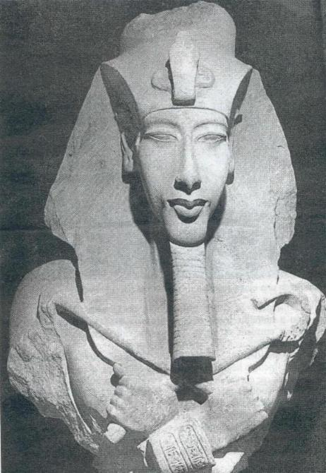
Estatua colosal de Akhenatón
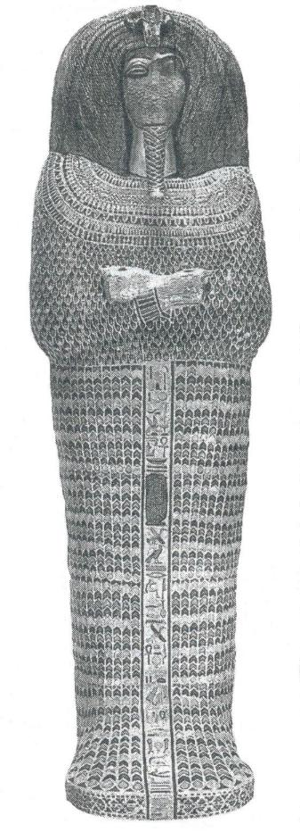
El sarcofago de la tumba 55
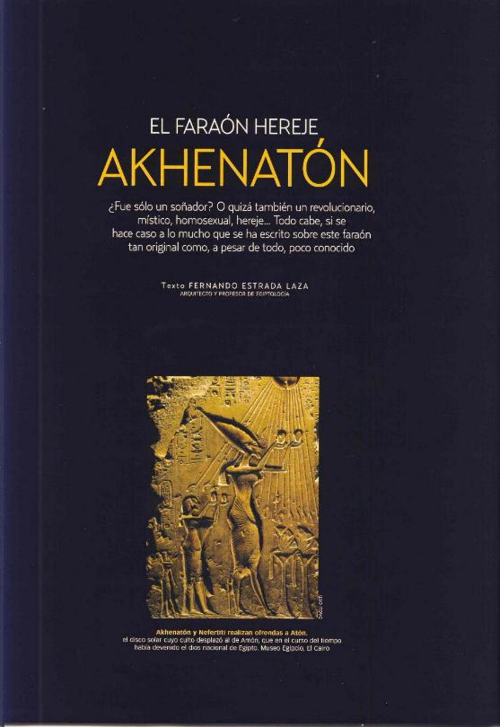
Cabeza
de estatua colosal de Akhenatón
quien rompió las convenciones que habían regido las representaciones
de los monarcas egipcios. Museo Egipcio, El Cairo.
A menudo se comete el error de analizar la personalidad de un personaje histórico
sin tener en cuenta las circunstancias en las que se desarrolló su existencia.
En el caso de Akhenatón, tal vez más que en el de cualquier otro
rey de Egipto, conviene analizar qué factores desencadenantes provocaron
la "locura" de Amarna. Porque, realmente, se puede calificar de locura
el hecho de romper con una tradición más que milenaria y, además,
enfrentarse como él lo hizo al todopoderoso clero del dios del Imperio,
Amón. Estos actos preliminares bastan para decir que Akhenatón,
fuera lo que fuese, no fue cobarde o apocado. No se puede intentar una empresa
como la que él inició sin poseer un espíritu decidido y
una fe en el objetivo previsto que nada tienen que ver con la debilidad. Pero,
¿por qué una revolución religiosa, si es que realmente
lo fue?
Nunca antes había alcanzado Egipto cotas tan altas de prestigio y riqueza como en los tiempos de la dinastía XVIII. Su padre, Amenhotep III (Amenofis), no se distinguió precisamente por continuar la política de campañas militares emprendida y culminada por su bisabuelo Tutmosis III, con la que se había forjado un Imperio. Pero, al igual que ocurrió tantas veces en esta dinastía, Tutmosis III no estaba predestinado a ocupar el doble trono de las Dos Tierras de Egipto. Nacido de una concubina del harén real llamada Iset, tenía muy pocas probabilidades de ceñir la doble corona. Ya de niño se le destinó a seguir la carrera sacerdotal en el templo de Amón Ra. Y fue el primer profeta del clero tebano quien, en aras de un meticuloso plan y mediante el oráculo divino, designó a Tutmosis como rey una vez alcanzase su mayoría de edad. Con ello se selló un compromiso entre las partes, que se prolongaría más allá de la vida de los propios actores del mismo. Aquel pacto inició una serie de estratagemas tendentes a legitimar el poder real, sin antecedentes en la historia dinástica de Egipto.
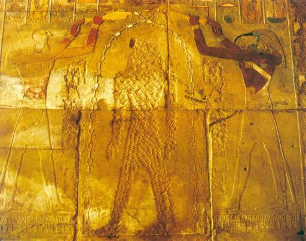
Reina por Amón
Bajo los primeros monarcas de la dinastía XVIII, el clero
del dios Amón fue ganando un considerable poder. La reina Hatshepsut
es un ejemplo de ello . Viuda de Tutmosis II alcanzó el trono durante
la minoría de edad de Tutmosis III graciasa la colaboración del
clero de Amón, con el sumo pontífice Hapuseneb a la cabeza, que
confirmó el origen divino de la reina. A su muerte y sobre todo bajo
el reinado de Ramsés II, su memoria fue perseguida con virulencia, borrándose
los cartuchos con su nombre y sus retratos, como éste del templo de Amón
en Karnak.
El
templo de Luxor,
dedicado a Amón Ra, fue empezado por Amenhotep III y cerrado por su hijo
Akhenatón, una vez que éste abandonó el culto a este dios
a favor de Atón.
Los reyes de las dinastías posteriores restituyeron en él el culto
a las antiguas divinidades.
UN CLERO DEMASIADO PODEROSO
Convertido en faraón, Tutmosis III devolvió con creces el favor recibido. Los botines de sus diecisiete campañas militares enriquecieron desmesuradamente las arcas del clero. Pero antes, su madrastra Hatshepsut, nombrada corregente por gracia del sacerdocio amoniano, no tuvo problemas en gobernar el país durante veintitrés años asistida por el visir y primer profeta de Amón, Hapuseneb. Con Hatshepsut se recurrió, por primera vez, a un truco aparentemente pueril. Fue el propio dios Amón Ra quien, adoptando la forma de Tutmosis I, padre de Hatshepsut, se acostó en amorosa cohabitación con la madre de ésta, Ahmés. Nadie osaría negar el origen divino, por vía más que directa, de la ambiciosa Hatshepsut.
Para legitimar a Tutmosis IV, padre de Amenhotep III, se recurrió a la predestinación onírica. Adormecido tras una cacería en Gizeh, al joven príncipe se le apareció el dios de la Gran Esfinge, Ra Harakhty, y le prometió el trono de Egipto a cambio de que le liberase del sudario de arena que le oprimía. En el caso de Amenhotep III, padre de Akhenatón, se apeló también al mito de la teogamia (la unión de su madre con el dios), la artimaña utilizada con Hatshepsut. Si ésta había grabado el romántico lance en su templo de Deir el-Bahari, Amenhotep hizo lo propio en el templo de Luxor.
Sea como fuere, hemos de suponer que Amenhotep III pensó que ya estaba más que pagada la deuda contraída con los sacerdotes. Deuda que, por otro lado, hacía peligrar la propia institución monárquica en provecho del clero de Amón. Éste fue el motivo de la ruptura emprendida por Amenhotep III. El faraón comenzó por alejarse de Tebas, feudo religioso del dios Amón, y por trasladar su residencia a Malkata, al sur de Tebas, pero en la ribera occidental del Nilo, la orilla de las necrópolis. Apoyado por el clero de Heliópolis y con la ayuda de su visir Ramose, Amenhotep III tramó el cisma que acabaría materializando su hijo Amenhotep IV.
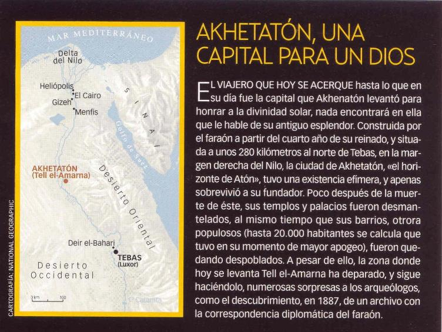
LA NUEVA RELIGIÓN
Fue, por tanto, una auténtica
lucha por el poder político disfrazada de enfrentamiento religioso, porque
sólo con la religión se podía eliminar al dios Amón.
Tras la ruptura llegó la primera provocación directa: Amenhotep
IV construyó, justo al este del recinto sagrado de Amón en Karnak,
un grandioso templo dedicado a la nueva divinidad, Atón. La guerra quedaba
así declarada. En el año quinto de su reinado, Akhenatón
cerró al culto los santuarios de Amón y mandó borrar su
odiado nombre de todos los monumentos de Egipto. No se respetó ni el
nombre de su padre ni el suyo propio. Amenhotep, "Amón está
en paz", pasó a ser Akhenatón, "el esplendor de Atón".
A continuación el faraón marcó con estelas fronteras el
territorio elegido en el Egipto medio para fundar su nueva capital, Akhetatón,
"el horizonte de Atón". El cisma, pues, estaba consumado y
sólo bastaba justificarlo con una nueva doctrina.
Casado con Nefertiti, con la que llegó a tener seis hijas, Akhenatón
se autoproclamó entonces único hijo y profeta de Atón,
un dios representado por el disco solar, entendible por todos los países
que integraban el Imperio egipcio. De ahora en adelante, sólo el faraón
sería el intermediario entre su padre divino y los hombres; Nefertiti
sería su acólito, como correspondía a una consorte divina.
juntos hicieron pública ostentación de todo aquello que antes
no se consideró propio de los faraones. Ver a la pareja real besándose
mientras su carro recorría la avenida principal de Akhetatón debió
ser un espectáculo tan frecuente como insólito para los egipcios.
De hecho, la originalidad del movimiento atoniano consistió en hacer
todo lo contrario a lo que el clero de Amón había sancionado como
inamovible. Si Amón, "el oculto", fue venerado en su oscuro
santuario de Karnak, a Atón se le rendiría culto al aire libre,
en los patios de los nuevos templos. Flores y frutos eran la principal ofrenda.
Su imagen, un disco cuyos rayos terminaban en manos que ofrecían la llave
de la vida, era la simple respuesta a las múltiples formas de los dioses
anteriores.
El fallo de la nueva religión quizá consistió en algo tan elemental como carecer de continuidad. Nunca se pensó en quién sucedería religiosamente al faraón muerto. El diseño teológico planteado no daba lugar a ninguna sucesión. La podría dar en el plano temporal, como rey de Egipto, pero no en el ámbito espiritual, como imagen viviente y única de Atón en la tierra. Aunque tampoco hubo tiempo de planearla, pues el sueño amárnico duró sólo unos quince años.
ARTE Y AMOR A LA VERDADRARTE Y AMOR A LA VERDAD
Una nueva estética, inspirada por Akhenatón, proclamaba el amor a la verdad, aunque, de hecho, se trataba de la verdad del monarca. Éste hizo de su propia imagen una caricatura grotesca y feminoide, que debemos interpretar como una exagerada representación de su fisonomía. Quiso ser tan veraz que, sobrepasando la realidad, renunció a la idealizada belleza plasmada en los retratos de los anteriores reyes. Si contemplamos sus primeras estatuas, como la de cuarcita que conserva el Louvre de París, veremos que los rasgos son absolutamente normales. Una prueba evidente de que tan sólo se trató de una moda distintiva la tenemos en que su familia y los cortesanos de Amarna pronto se hicieron representar con abultados pechos y caderas (en el caso de los hombres), cráneos alargados y vientres prominentes. Son, precisamente, esos rasgos los que conforman parte de la polémica leyenda que rodea al faraón.
Si a la apariencia femenina de sus estatuas le sumamos la ausencia de sexo de su coloso desnudo de El Cairo y la representación de la estela de Berlín, en la que se ve a dos faraones en actitud amorosa, surgen argumentos para suponer la homosexualidad de Akhenatón. Pero no hay que precipitarse.
En primer lugar, el desnudo del museo cairota obedece a una razón lógica de la nueva religión. Atón, como creador de todo cuanto existe, nació de su propia esencia sin necesidad del concierto de dos sexos diferentes. Siendo a la vez padre y madre de todo lo creado, ¿por qué definirse con un sexo concreto? Akhenatón hace suya esta idea cuando se proclama hijo único de Atón, y la materializa mandando esculpir los colosos que se erguían en su desaparecido templo en Karnak. ¿Acaso las estatuas de los anteriores dioses no mostraban los rasgos del rey propios de las épocas en que fueron cinceladas?
Akhenatón
se hizo representar en numerosas ocasiones en el acto de ofrendar a Atón,
como en este caso de esta imagen del soberano portando una tablilla votiva conservada
en el Museo Egipcio de El Cairo.
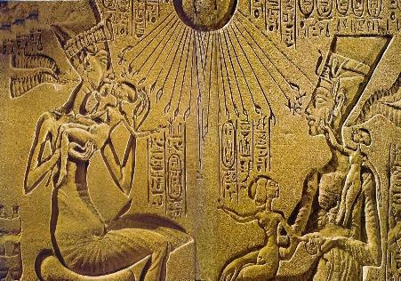
Akhenatón (a la izquierda),representado
junto a su esposa Neferttiti, en una escena
que muestra a ambos en un ambiente familiar, rodeados de sus hijas. Los benéficos
rayos
de Atón descienden sobre la familia real. Museo Egipcio, Berlín.
EL REFUGIO FAMILIAR DE UN FARAÓN
La ciudad que hizo levantar
Amenhotep IV para honrar a Atón no tenía nada que envidiar a ninguna
de las grandes capitales del Egipto antiguo: en ella se han localizado dos suburbios
de viviendas, al norte y al sur, almacenes, edificios administrativos, cuarteles
para el ejército y dos necrópolis, además de dos templos
dedicados al Sol, un gran complejo palacial en el centro de la urbe y otro de
menor tamaño en el sector norte.
La vida de Akhenatón debió discurrir entre ambos palacios. En
la tranquilidad de sus salas privadas podía olvidar las intrigas religiosas
y políticas que se fraguaban a su alrededor y buscar refugio tanto en
su fe en Atón como en su familia más próxima.
Elocuentemente hizo decorar sus cámaras privadas con encantadoras escenas
domésticas que sorprenden por su cotidianidad y humanidad. En ellas Akhenatón
y Nefertiti aparecen rodeados por sus seis hijas en una atmósfera relajada
y afectuosa.
La pareja, sin embargo, acabó separándose por causas que se desconocen.
La reina se trasladó entonces al palacio del norte, conocido hoy como
<<palacio de Nefertiti>> acompañada por la mayor de sus hijas,
Meritatón.
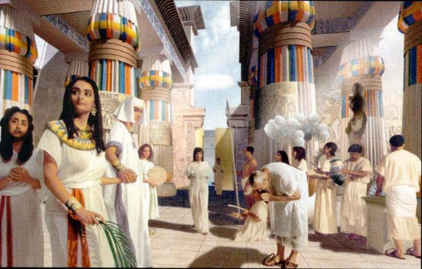
La
morada de Atón
Recreación del patio solar del pequeño templo de Atón en
Akhetatón, caracterizado por sus grandes columnas
y sus espacios abiertos a los rayos del Sol. En la imagen la reinta Tiy (en
el extremo izquierdo)visita a su hijo
Akhenatón y a su nuera Nefertiti (cogidos de la mano).
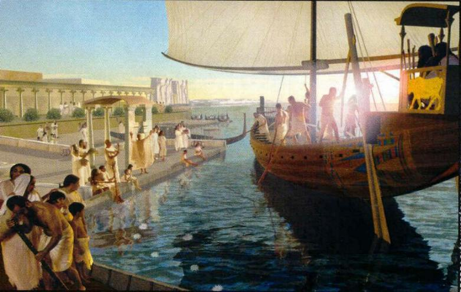
El puerto de Akhetatón
La nave de un embajador extranjero atraca en el puerto fluvial de Akhetatón,
la nueva capital construida por el faraón hereje.
Al fondo puede verse el gran palacio de Akhenatón levantado al borde
del agua.
En cuanto a la inacabada estela de Berlín, que reflejaría un lance amoroso entre Akhenatón y su supuesto sucesor Smenjkare, también hay mucho que decir. De Smenjkare no sabemos absolutamente nada, sólo conocemos su nombre. Y, dado que los faraones podían cambiar de nombre, nada nos asegura, ni tan siquiera, que llegase a existir. Una moderna teoría, fascinante como pocas, atribuye este nombre a la propia Nefertiti en sus últimos tiempos. Lo más probable es que la inacabada estela de Berlín, y por lo tanto anepigráfica (sin escritura), represente a la pareja real. Ni es tan extraño que la reina llevase en su corona la cobra distintiva de los faraones, ni a veces es tan fácil diferenciar en las estelas a Nefertiti de Akhenatón.
Sin el menor carácter frívolo, lo que sí admite una comparación es un cierto aspecto del arte y del fondo sociopolítico que impregnó la doctrina de Amarna, y que, a grandes trazos, se podría resumir en el lema "haz el amor y no la guerra", tan popular en los años setenta del pasado siglo.
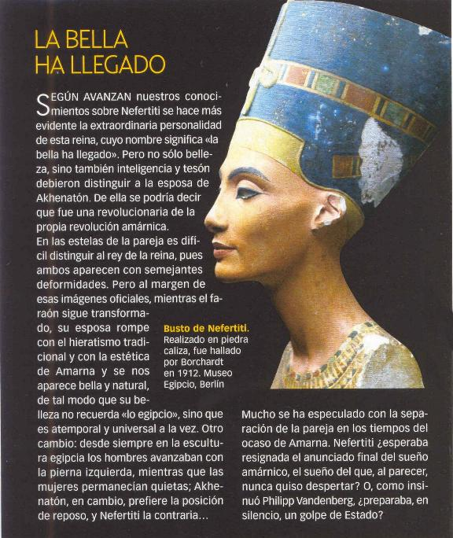
Pacifista en su actitud, Akhenatón se complacía en ofrecer flores
a Atón, descuidando la seguridad de las fronteras del Imperio que le
había sido confiado. En ese período se perdió, por ejemplo,
el control de las minas de oro de Nubia, tan necesarias a Egipto, y gracias
a la vigilancia del generalísimo Horemheb, auténtico cerebro en
la sombra, no se perdió mucho más.
Los descuidos del faraón en el control del Imperio a punto estuvieron
de quebrar una civilización en la cúspide de su grandeza. Porque
el arte alcanzó, en su tiempo y gracias a él, cimas jamás
logradas.
Parecía que la delicadeza
y, al mismo tiempo, contundencia del arte imperante bajo Amenhotep III marcaba
un cenit no superable. Y, sin embargo, no fue así. El arte amárnico
supuso un soplo de aire fresco en un panorama artístico encorsetado por
demasiado perfecto. Sin perder su encanto, el arte tradicional ganó en
libertad y se hizo más humano y comprensible. Los mismos temas se trataron
de manera muy diferente; los antes simétricos y uniformes tallos de papiro
que constituían los fondos de muchas composiciones ahora aparecían
curvados y entrelazados, mecidos por la brisa, tal como se muestran en
la naturaleza. Los ademanes de las figuras ganaron en naturalidad: ahora los
ánades remontan el vuelo de forma desordenada, pero sin perder nunca
el equilibrio compositivo que impone el contexto de la escena representada.
Y todo ello se traduce en una nueva visión de movimiento que transmite
paz, pero una paz dinámica, nada estática como antaño.
Todo período artístico suele tener una obra que consideramos única, esa vedette que agolpa a los turistas en tomo a la pared o la vitrina del museo en que se expone, pero en este período del arte egipcio la elección se hace realmente difícil. ¿Qué pieza salvamos del supuesto incendio? ¿La máscara perfecta de Tutankhamón? ¿0 quizá su trono repujado de oro, plata y pasta de vidrio? Perdidos en los mil y un tesoros que este joven faraón nos legó en su tumba no caemos en el recuerdo de una belleza casi sobrenatural: el busto de Nefertiti que se conserva en Berlín. A pesar de la poca calidad de la piedra y de faltarle un ojo, Nefertiti se nos muestra en toda su sensual belleza. El escultor Tutmés se superó a sí mismo en esta obra que marca el espíritu de quien la contempla.
Prueba de la fuerza de la nueva estética la tenemos en que, tras ser derribado el culto a Atón y reinstaurada la ortodoxia amoniana, los artistas ramésidas siguieron influenciados por aquel arte proscrito. Ya no se perderían aquellas sonrisas esbozadas y los vientres marcarían su curva natural que nunca antes de la herejía se había resaltado. Quedaron para siempre estos y otros rasgos impregnados de dulzura, como los que hoy podemos contemplar en la tumba de Senedjem, que vivió bajo el reinado de Ramsés II, el principal perseguidor del soñador de Amarna.
.- La revolución de Akhenatón afectó también al
arte . Las representaciones del faraón y su familia rompían con
la tradicional idealización de los soberanos. En la imagen cabeza monumental
del rey hallada en Karnak. Museo de Luxor.
UN FARAÓN ÚNICO
La historia de Egipto, que parecía seguir una línea inmutable,
ajena a guerras y cambios dinásticos, sufrió una gran conmoción
bajo Akhenatón. Se dan aquí las fechas según los años
de su reinado, que se extendió de 1378 a 1362 a. C. según Cyril
Aldred o de 1364 a 1347 a. C. según Joseph Padró
2º año
MATRIMONIO CON NEFERTITI
Amenhotep IV, rey de Egipto tras la muerte de su padre Amenhotep III, se desposa
con Nefertiti quizá de origen egipcio aunque con ancestros asiáticos.
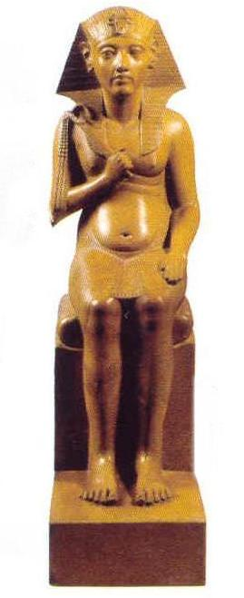
Akhenatón
ESTATUA HALLADA EN TELL EL-AMARNA. MUSEO DEL LOUVRE, PARÍS.
5º año
AMENHOTEP IV CAMBIA SU NOMBRE
El cambio de nombre por el de Akhenatón marca el abandono del culto a
Amón en beneficio de Atón, el disco Solar.
12º año
LA PAREJA REAL SE SEPARA.
Tras la muerte de Maketatón, su segunda hija, el rey se separa de Nefertiti,
cuyas funciones son asumidas por su hija Meritatón.
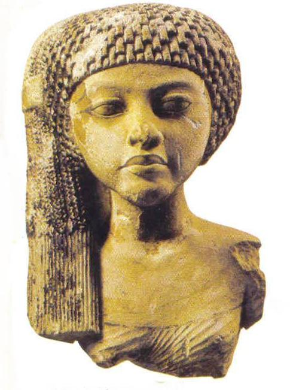
RETRATO DE MAKETATÓN.
La segunda hija de Akhetatón y Nefertiti. Museo del Louvre, París.
17º año
UN MISTERIOSO SUCESOR PARA AKHENATÓN
Muere Akhenatón, hecho que marca el declive de la revolución amarniana.
De su sucesor, Smenjkare, no se sabe nada.
=====================
Historia.- National Geographic.-Número
7.- Mayo 2004